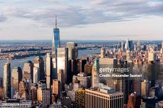

About New York City
New York City, known as the "Big Apple," is a bustling metropolis and the largest city in the USA. NYC is known for its diversity, culture, and vibrant arts scene as well as its accessibility initiatives, which include accessible public transportation and attractions that cater to visitors with various disabilities.